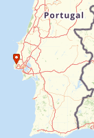
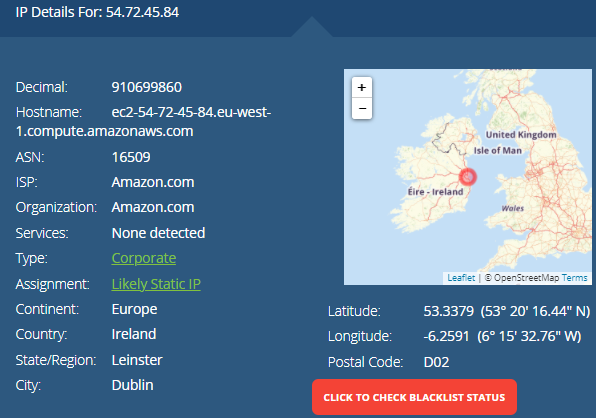
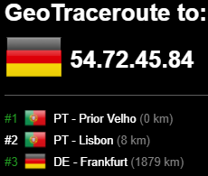
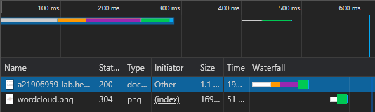
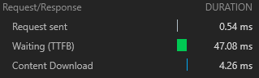
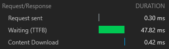

A informação referente ao meu IP é:
|  |
|---|
Pingado o DNS do heroku obtemos o IP:

A informação referente ao IP do Heroku é:
|  |
|---|
Ao usarmos a ferramenta de Inspect obtemos diversas informações sobre o web site.
Na secção "Network" podemos ver os ficheiros que são descarregados para ser possivel visualizar o web site, bem como o tempo que demorou a fazê-lo:
Ao abrir a app no heroku são descarregados 2 ficheiros:
Estes ficheiros tiveram os seguintes tempos:
|  |
|
|---|---|
|  |
|
Na tab "Headers" obtemos toda a informaçao dentro da tag
do documento HTMLNa tab "Preview" obtemos uma pré-visualização de cada ficheiro (neste caso o HTML e a imagem)
Na tab "Timing" obtemos informação sobre os tempos de Queue e Transferência dos ficheiros